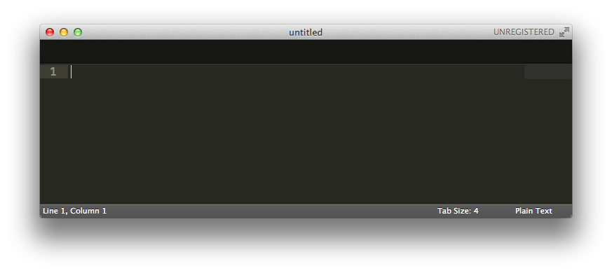
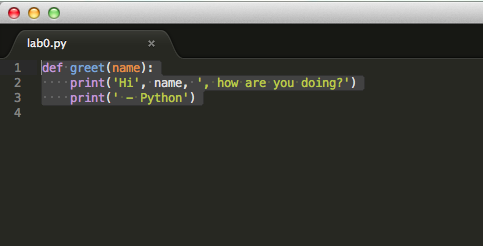
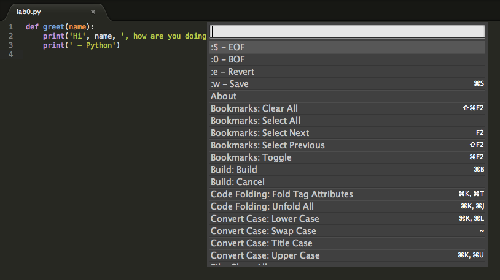

Sublime Text
Introduction
Sublime is a friendly text editor known for its slick user interface, numerous features, and snappy performance that provides a combination of many amazing features from modern text editors (and more)!
Sublime is easy to use, and extremely fun to master (I mean, who doesn't want to use multiple cursors in vim mode while -- you get the picture, do things with CS words that don't quite make sense right now). This guide will get you started with Sublime, with a few basics and essential tools for your workflow in CS 7. If there's something you want Sublime to do, it's likely possible! A quick Google search will probably show you a plugin you can install to extend Sublime's functionality.
Getting Sublime on your own computer
Visit Sublime's website and follow the instructions to install it on your computer.
Example: greet.py
By now, you should have Sublime installed. You have the option
of either finding the Application or opening it up from the terminal.
Recall from Lab 1 that you can open a terminal on the school
computers by pressing Ctrl-Alt-t.
Let's first create and navigate to a directory called example, using
the UNIX commands you learned in Lab 1:
mkdir ~/example
cd ~/exampleOpening files
Now let's open up Sublime!
For Mac users, you'll most likely find Sublime in your
Applications.
For Ubuntu users, you'll most likely find Sublime by putting it in the search bar.
For Windows users, you'll most likely find Sublime in your
Program Files.
Sublime will open up to a blank file. We can start writing our program!

Editing files
Now we have Sublime open, we can begin writing our first Python file. We'll be writing a short program that prints out a greeting when executed. Don't worry, we don't expect you to know any Python yet! All you have to do is type in the following:
def greet(name):
print('Hi', name, ', how are you doing?')
print(' - Python')Once you've finished typing, Sublime should look something like this:

To save, you can just type Ctrl-s. If you haven't already, save
this file as greet.py.
Spaces and tabs
By default, Python outputs a tab character (\t) when you press the tab key.
However, for this class we want to indent our code using spaces.
Check "View > Indentation > Indent Using Spaces" to make Sublime output 4 spaces
whenever you press the tab key.
Running Python
Back in our terminal, we're currently in our example directory.
Let's play around with our code. In the terminal, start by typing
python3 -i greet.pyThis command does the following:
python3is the command that starts Python- The
-iflag tells Python to start in interactive mode, which allows you to type in Python commands from your terminal greet.pyis the name of the Python file we want to load
Notice that the Python interpreter says >>>. This means Python is
ready to take a command.
Recall that we defined a function called greet. Let's see what it
does! Type in the following:
>>> greet('Michelle')Python will then print out
Hi Michelle, how are you doing?
- PythonOur code works! Let's close Python by typing in
>>> exit()There are a couple of ways to exit Python. You can type in
exit()orquit(). On MacOS and Linux, you can also type inCtrl-d(this doesn't work on Windows).
Congratulations, you've edited your first file in Sublime!
Keyboard Shortcuts
Sublime has a some swell keyboard shortcuts. Here are a few useful
ones! (for Mac users, replace all the Ctrl sequences with cmd)
Ctrl-s: saves the current fileCtrl-x: cuts the entire line your cursor is onCtrl-v: pastes the entire line you cut in the line above your cursor OR pastes the selected text in placeCtrl-z: undoCtrl-y: redoCtrl-[: indent a line or a group of linesCtrl-]: dedent a line or a group of linesCtrl-d(my favorite!): highlights the current word. For every 'Ctrl-d' you type after this first word, it will highlight every next instance of the word. This allows you to easily rename variables with multiple cursors! (Play around with this one, it's fun!)Ctrl-tab: moves you to the next tabCtrl-shift-tab: moves you to the previous tabCtrl-f: search for a wordCtrl-shift-f: searches through all tabsCtrl-shift-p: This one's important. This opens up a little panel of tools! You can do things like type "ss python" which will set the syntax of your file to Python or "reindent" will help you reindent a file you paste in (this will be helpful in future labs!)

This guide only scratches the surface of Sublime's functionality. Remember, if there's something you wish Sublime could do, it probably can! Just Google it!